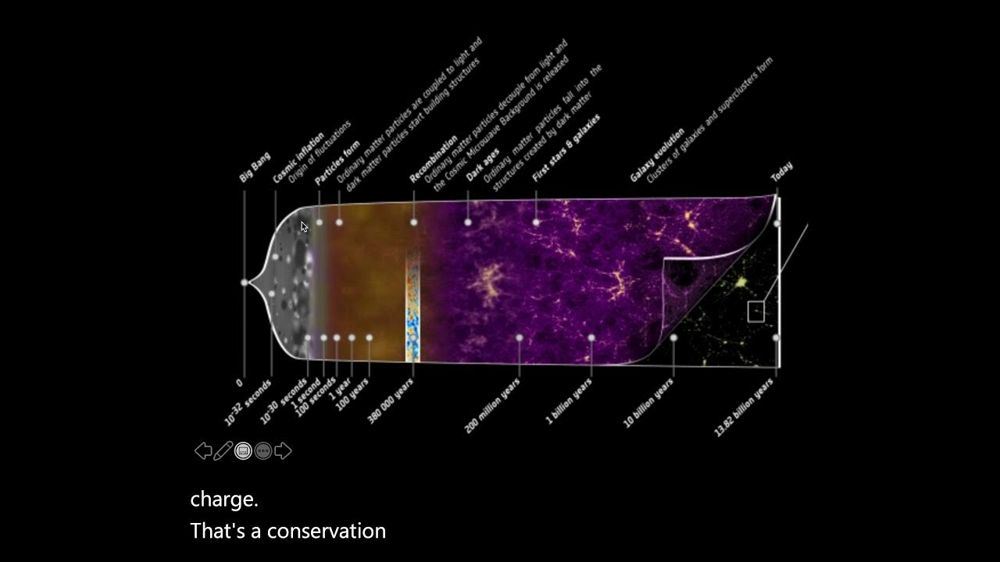
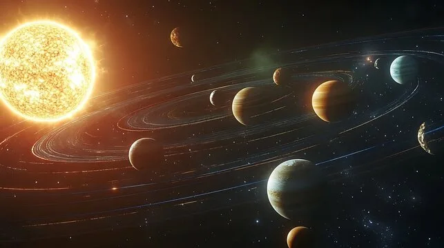
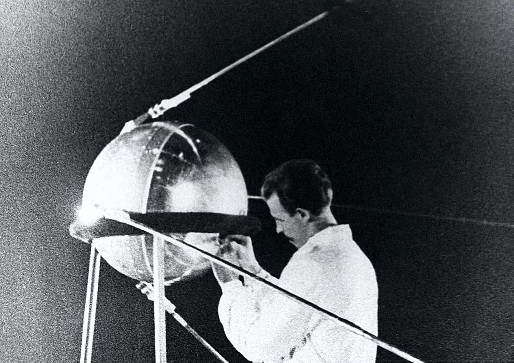
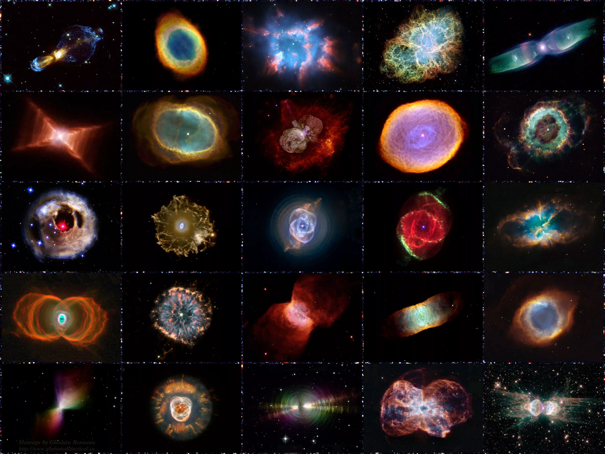

Что такое космос?
Космос (или Вселенная) — это бесконечное пространство за пределами Земли, заполненное звёздами, планетами, газом, пылью и другими объектами. В космосе нет воздуха, очень холодно и полная тишина.
Из чего состоит космос?

1. Звёзды
Огромные раскалённые газовые шары, которые светятся за счёт термоядерных реакций. Солнце — наша ближайшая звезда. Звёзды бывают разные по размеру, цвету и температуре. Самые горячие — голубые, самые холодные — красные.
2. Планеты
Небесные тела, которые вращаются вокруг звёзд. Планеты Солнечной системы: Меркурий, Венера, Земля, Марс, Юпитер, Сатурн, Уран, Нептун. Делятся на земной группы (каменистые) и газовые гиганты.
3. Галактики
Огромные скопления звёзд, газа и пыли. Млечный Путь — наша галактика. Во Вселенной миллиарды галактик.
4. Астероиды и кометы
Астероиды — каменные глыбы (летают в основном между Марсом и Юпитером). Кометы — ледяные тела с хвостом из газа и пыли.
Солнечная система
Наш космический дом:

- Солнце — центр системы (99,8% всей массы!)
- Четыре внутренние планеты: Меркурий, Венера, Земля, Марс
- Пояс астероидов
- Четыре внешние планеты: Юпитер, Сатурн, Уран, Нептун
- Пояс Койпера (там Плутон и другие карликовые планеты)
Исследование космоса
Как изучают космос:

- Телескопы — наземные и космические (например, телескоп Джеймса Уэбба)
- Автоматические станции — летают к планетам без людей
- Спутники — на орбите Земли
- Пилотируемые полёты — люди в космосе (МКС)
Важные даты:
- 1957 год — первый искусственный спутник
- 1961 год — первый полёт человека в космос (Юрий Гагарин)
- 1969 год — высадка человека на Луну
- 1998 год — начало строительства МКС
- 2021 год — начало работы телескопа Джеймса Уэбба
Интересные объекты космоса

- Чёрная дыра — область с огромной гравитацией, откуда не выходит даже свет
- Пульсар — нейтронная звезда, которая быстро вращается и излучает радиоволны
- Квазар — яркое ядро далёкой галактики с чёрной дырой в центре
- Туманность — облако газа и пыли, где рождаются звёзды
- Экзопланета — планета за пределами Солнечной системы